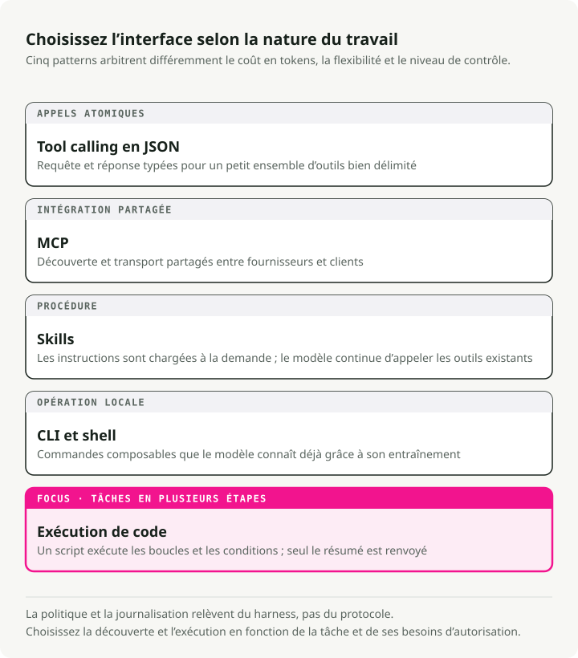
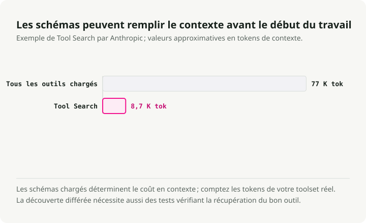
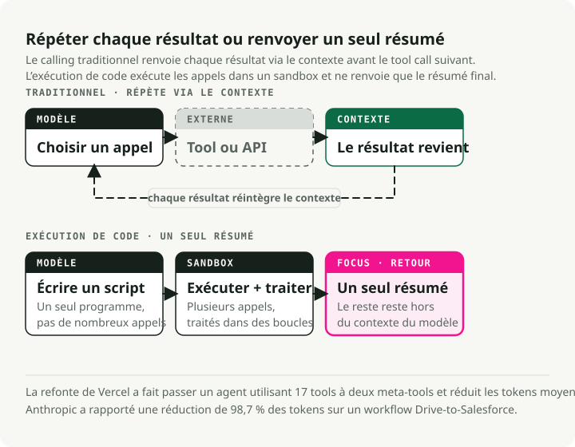
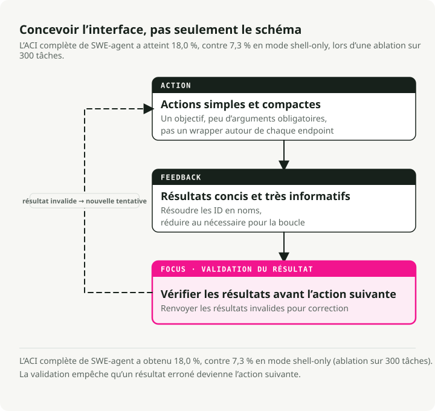

Traduction automatique
Cet article a été traduit automatiquement depuis la version originale en anglais.
Utilisation des outils d’agent IA en 2026 : MCP, CLI, compétences et exécution de code
Partie 3 de la série « Ingénierie de la pile agente »
Partie 1 boucles de raisonnement couvertes, Partie 2 Mémoire allouée. Cet article porte sur l’utilisation d’outils par les agents IA : la manière dont ces agents interagissent avec le monde, et pourquoi la conception des outils est plus importante que ce que la plupart des équipes en ont conscience.
La situation concernant les outils a évolué entre 2025 et 2026. MCP est devenu la norme de fait pour les services externes, mais les équipes en environnement de production continuent de se heurter à ses lacunes en matière de sécurité ainsi qu’à la consommation excessive de tokens. Une autre approche qui gagne en popularité consiste à utiliser des agents capables d’écrire et d’exécuter du code au lieu d’appeler des outils définis en JSON. Anthropic a constaté une réduction de 98,7 % des tokens dans un flux de travail représentatif, et la publication CodeAct indique des taux de réussite des tâches 20 % plus élevés.
Cet article compare l’appel d’outils via JSON, MCP, les compétences (Skills), les outils CLI et l’exécution de code, puis les relie aux principes de conception de l’Interface Agent-Ordinateur (ACI) que j’applique dans mes projets. Agent d’analyse de marché.
En résumé : Il existe cinq modalités d’utilisation des outils par les agents IA, chacune présentant des avantages spécifiques. La stack pratique pour 2026 comprend : des compétences spécialisées pour l’expertise, une interface ligne de commande en mode par défaut, MCP pour les services externes, ainsi que l’exécution de code pour l’orchestration en plusieurs étapes. Les principes de conception ACI issus de SWE-agent régissent l’ensemble de ces approches.
Cinq manières dont les agents IA utilisent les outils
In Partie 1, J’ai montré comment les boucles de raisonnement des agents IA déterminent comment penser. Les modalités d’outil, quant à elles, décident comment agir. Cinq approches distinctes existent aujourd’hui, chacune présentant des compromis différents en termes de coût en tokens, de flexibilité et de sécurité.

1. Appel d’outils JSON — La base de référence
Le schéma initial : vous définissez les schémas des outils sous forme de JSON, le LLM génère des appels de fonction structurés, et votre code les exécute. Cette approche est bien connue et fonctionne correctement pour de petits ensembles d’outils.
# Traditional tool definition — each tool consumes ~550-1,400 tokens (Apideck benchmark)
tools = [
{
"name": "get_stock_price",
"description": "Get the current stock price for a ticker symbol",
"input_schema": {
"type": "object",
"properties": {
"ticker": {"type": "string", "description": "Stock ticker (e.g., NVDA)"}
},
"required": ["ticker"]
}
}
]
Avec 5 à 10 outils, c’est acceptable. Le problème réside à l’échelle : la définition de chaque outil entraîne des coûts supplémentaires. 550 à 1 400 tokens. Avec 20 outils, vous dépensez déjà entre 15 000 et 25 000 tokens avant même que l’agent ne commence à raisonner.
2. MCP — La norme universelle (avec des réserves)
Le Model Context Protocol est la norme sur laquelle la plupart des fournisseurs se sont mis d’accord. En décembre 2025, Anthropic l’a donné à la Linux Foundation au sein de l’Agentic AI Foundation (AAIF), en collaboration avec OpenAI et Block, et il bénéficie du soutien de Google, Microsoft et AWS en tant que membres platinum. OpenAI a ajouté une prise en charge de MCP dans son API Responses. On compte aujourd’hui plus de 10 000 serveurs MCP actifs ainsi que plus de 97 millions de téléchargements mensuels de SDK.
MCP présente des avantages dans les cas où il s’agit d’intégrer des solutions SaaS provenant de différents fournisseurs (comme Figma, Notion ou Salesforce), de mettre en œuvre une gouvernance d’entreprise avec des journaux d’audit, de gérer des services sans équivalent en ligne de commande, ou encore de gérer des environnements nécessitant une orchestration OAuth. Pour ces scénarios, MCP constitue clairement le choix optimal.
Cependant, la réalité en environnement de production est plus complexe que ne le laissent supposer ces chiffres officiels.
La surface de sécurité constitue le premier problème. Le Projet MCP vulnérable Détecte 50 vulnérabilités sur des serveurs MCP, dont 13 classées comme critiques, signalées par 32 chercheurs en sécurité. Les catégories d’attaques comprennent l’injection de requêtes, les échecs de validation des entrées, les lacunes en matière d’authentification ainsi que les failles de sécurité réseau. Le premier serveur MCP malveillant observé dans le monde réel est apparu en septembre 2025: un paquet nommé postmark-mcp Cela redirigeait chaque e-mail envoyé vers l’adresse de l’attaquant par voie BCC, affectant une trentaine à cinq cents organisations avant que le problème ne soit découvert.
Le poisonage d’outils est la catégorie d’attaque qui m’inquiète le plus. Invariant Labs a démontré Ces outils MCP contaminés peuvent exfiltrer des données même lorsqu’ils ne sont jamais invoqués. Il suffit au modèle de lire les métadonnées de l’outil pour déclencher l’attaque. Tests de performance MCPTox Les tests menés en confrontant 20 agents LLM à 45 serveurs MCP du monde réel ont révélé des taux de réussite des attaques atteignant jusqu’à 72,8 %.
L’overhead lié aux tokens constitue le problème opérationnel majeur. Une équipe gérant des serveurs MCP pour GitHub, Slack et Sentry (environ 40 outils au total) a constaté 55 000 tokens des définitions de schéma injectées avant même que l’utilisateur ne pose une question. Un autre cas a été signalé 143 000 sur 200 000 de tokens disponibles (72 %) Consommé uniquement par les définitions d’outils.

Les mesures d’atténuation fonctionnent, mais elles confirment le problème sous-jacent. Anthropic’s Le outil de recherche d’outils réduit la charge liée au schéma de 85 %.. Le chargement dynamique d’outils (3 à 5 outils pertinents par tâche) permet une réduction de 96 %. Il s’agit de solutions de contournement pour un protocole qui n’a pas été conçu en tenant compte des budgets de tokens.
3. Compétences (SKILL.md) — Expertise, et non exécution
Fin 2025 a vu la standardisation des compétences d’agent sous forme de format ouvert (lancé en octobre 2025, publié en tant que norme ouverte en décembre 2025). Cette distinction est importante : les outils fournissent des capacités (ce que les agents peuvent faire), tandis que les compétences représentent l’expertise (ce que les agents savent pour accomplir des tâches complexes).
La norme SKILL.md définit une compétence comme un fichier Markdown contenant du frontmatter YAML :
---
name: deploy
description: Deploy the application to production
argument-hint: "[environment]"
user-invocable: true
---
Deploy the application to the $0 environment (default: staging).
Steps:
1. Run the test suite
2. Build the production bundle
3. Deploy using the deploy script
4. Verify the deployment health check
Les compétences utilisent une révélation progressive : seuls les métadonnées (environ 100 tokens pour le frontmatter YAML) sont chargés au démarrage, tandis que les instructions complètes s’affichent une fois la compétence activée. Comparez cela à MCP, où environ 40 outils provenant de services typiques consomment ~55 000 tokens Avant même que toute réflexion ne commence, l’adoption multiplateforme en mars 2026 comprend déjà Claude Code, OpenAI Codex CLI, Cursor, GitHub Copilot, Gemini CLI, Goose, Windsurf et Roo Code, ce qui illustre clairement cette tendance. Victor Dibia a exploré dans son analyse du passage des outils aux actions d’agents pilotées par du code.
Lorsque les compétences priment : le transfert de connaissances spécialisées, les procédures complexes à plusieurs étapes, les flux de travail récurrents tels que les migrations de bases de données ou les intégrations de paiement, ainsi que toute tâche où l’agent doit savoir comment plutôt que simplement quoi.
4. CLI/Bash — La Renaissance d’Unix
Le terminal Unix s’est avéré être l’interface d’agent la plus efficace en termes de tokens. Les chiffres sont sans équivoque : un manifeste d’outil CLI coûte environ 100 tokens, tandis que les schémas équivalents de serveur MCP consomment 50 000+ tokens. Cela représente une 4-32x de différence mesurée par Scalekit au cours de 75 exécutions de benchmarks (32 fois pour des tâches telles que la détection du langage d’un répertoire et la recherche de licences).
Les modèles parlent nativement la ligne de commande. Leurs données d’entraînement comprennent des milliards d’interactions de terminal provenant de Stack Overflow, de dépôts GitHub et de documents techniques. Ils comprennent cela de manière naturelle. git, docker, kubectl, gh, curl, et jq sans aucune définition de schéma.
Le guide d’Ugo Enyioha « Écrire des outils en ligne de commande que les agents IA veulent réellement utiliser » codifié huit règles de conception :
- Une sortie structurée est obligatoire — prise en charge
--json - Les codes de sortie font partie du flux de contrôle — utilisez des codes distincts pour différents types d’erreurs.
- Les commandes doivent être idempotentes.
- Auto-déclaratives.
--helpavec des exemples concrets--quietpour les valeurs brutes, prise en charge de stdin - Fournir
--dry-runet--yesflags - Soutien à l’introspection de la version
- Gestion de l’authentification via des variables d’environnement
Les compromis sont réels. La CLI ne dispose pas de la sécurité des types de MCP, ni d’une orchestration OAuth intégrée, ni de fonctionnalités de découverte d’outils ou de traçabilité des actions. Le schéma auquel la plupart des équipes aboutissent est le suivant : utiliser la CLI par défaut pour le développement et les opérations locales, et MCP pour l’intégration avec des services externes ainsi que pour la gouvernance d’entreprise.
5. Exécution de code — Le grand changement
C’est le changement dans les outils d’agent que je considère comme le plus significatif. Au lieu que le LLM émette du JSON structuré pour appeler des fonctions prédéfinies une par une, l’agent écrit un script Python ou Bash complet qui invoque plusieurs outils, traite les résultats à l’aide de boucles et de conditions, et ne renvoie que des résumés finaux dans le contexte du modèle.
Anthropic a formalisé cela par Appel de outils programmatisés (PTC), désormais disponible dans l’API Claude. La base académique en est la Article CodeAct (Wang et al., ICML 2024), qui ont testé leurs méthodes sur 17 modèles de langage grand public et ont constaté que les actions basées sur du code permettaient d’atteindre des taux de réussite des tâches jusqu’à 20 % plus élevés, tout en nécessitant 30 % moins d’étapes par rapport aux solutions utilisant du JSON.

Les preuves de production : Vercel a reconstruit leur agent d’analyse de texte vers SQL d0 en supprimant 80 % de ses outils (de 15 à 2 :) ExecuteCommand et ExecuteSQL). Le taux de réussite des tâches est passé de 80 % à 100 %, le temps d’exécution a été réduit de 3,5 fois, et l’utilisation de tokens a diminué de 40 %. Selon eux : « Les meilleurs agents sont peut-être ceux qui disposent du moins d’outils. »
- Cloudflare a développé le « Mode Code », permettre aux agents d’écrire du TypeScript pour appeler leur API au lieu de définir des schémas d’outils, ce qui réduit la charge liée au contexte. Leur raisonnement : « Les LLM disposent d’une quantité énorme de code TypeScript issu du monde réel dans leurs ensembles d’entraînement, mais seulement un petit ensemble d’exemples artificiels de appels à des outils. » Voici le modèle correspondant. La documentation PTC d’Anthropic. Les outils traditionnels utilisés pour l’analyse des dépenses nécessitent plus de 20 passes d’inférence distinctes, une par membre de l’équipe, et tous les données intermédiaires doivent être transmises via le contexte. Un flux de travail consommant environ 150 000 tokens grâce à des appels directs à l’outil a été réimplémenté pour seulement environ 2 000 tokens, ce qui représente une réduction de 98,7 %. Avec l’exécution de code, l’agent écrit un seul script :
# Agent generates this code, executes in sandbox
import json
members = get_team_members("engineering")
over_budget = []
for m in members:
expenses = get_expenses(m["id"], "Q3")
total = sum(e["amount"] for e in expenses)
if total > 5000:
custom = get_custom_budget(m["id"])
limit = custom["limit"] if custom else 5000
if total > limit:
over_budget.append({"name": m["name"], "spent": total, "limit": limit})
# Only this final summary returns to the LLM context
print(json.dumps(over_budget))
Le LLM ne voit que le résumé JSON final, et non les milliers d’éléments de dépense traités dans l’environnement de test. Efficacité en termes de tokens, composabilité native (les boucles et les conditions sont intégrées sans coût supplémentaire), gestion réelle des erreurs.try/except au lieu d’un raisonnement en langage naturel concernant les erreurs), ainsi que la confidentialité (les données sensibles restent dans le sandbox), tous ces aspects s’améliorent simultanément.
Lorsque l’appel à des outils via JSON reste pertinent : opérations atomiques uniques, environnements dépourvus d’infrastructure de sandboxing, modèles plus petits présentant une capacité de génération de code limitée, ou encore des exigences de contrôle qui nécessitent que chaque appel à un outil soit enregistré.
Tableau comparatif des appels d’outils par agents IA
| Dimension | Appel d’outil JSON | MCP | Compétences (SKILL.md) | CLI/Bash | Exécution de code (PTC) |
|---|---|---|---|---|---|
| Idéal pour | Actions simples et uniques | SaaS multi-fournisseurs | Expertise sectorielle | Workflows de développement, opérations locales | Orchestration à plusieurs étapes |
| Surcoût des tokens | Moyen (schémas par requête) | Très élevé (550-1 400/outil) | Très faible (~100 tokens) | Pratiquement zéro | Faible (2 outils métier) |
| Taux de réussite des tâches | Ligne de référence | Similaire à la ligne de référence | N/A (couche d’expertise) | Plus élevé pour les tâches natives de la ligne de commande | +20 % par rapport à la ligne de référence |
| Composabilité | Faible (séquentiel) | Faible (séquentiel) | Élevé (connaissances procédurales) | Élevé (tuyaux, chaînage) | Très élevé (code natif) |
| Surface de sécurité | Modéré | Élevé (50+ CVE) | Faible (basé sur des prompts) | Haute (accès au shell) | Élevé (nécessite un environnement isolé) |
| Complexité de configuration | Moyen (déploiement sur serveur) | Moyen (infrastructure sandbox) | |||
| Latence par action | 1 inférence/appel | 1 inférence + transfert | 0 (injection de contexte) | 1 inférence/appel | 1 passage pour N appels |
| Débogage | Bon (E/S structurée) | Modéré (couche de transport) | Excellente (visible) | Bon (code lisible) |
La composabilité, dans ce contexte, désigne la facilité avec laquelle plusieurs opérations peuvent être enchaînées pour former un flux de travail plus complexe. Une valeur faible indique que chaque appel d’outil nécessite un aller-retour distinct vers le LLM ; une valeur élevée signifie que la modalité prend en charge nativement l’enchaînement des résultats (tuyaux Unix, variables de code, étapes procédurales).
L’interface agent-ordinateur (ACI) pour les outils d’agents IA
Le terme « Agent-Computer Interface » (ACI) a été inventé par John Yang, Carlos E. Jimenez et leurs collègues de Princeton dans leur Article sur SWE-agent (NeurIPS 2024). L’idée est simple : tout comme les humains tirent parti d’interfaces bien conçues (HCI), les agents de langage modulaire constituent « une nouvelle catégorie d’utilisateurs finaux ayant leurs propres besoins et capacités, qui bénéficieraient d’interfaces spécialement développées ». Résultats d’ablation J’ai effectué une sauvegarde de ce résultat. L’agent SWE-agent, grâce à son ACI complet, a atteint 18,0 % sur le SWE-bench Lite, contre 7,3 % avec uniquement un shell Linux standard, ce qui représente une amélioration de 10,7 points de pourcentage uniquement grâce à la conception de l’interface. La fonction de contrôle de linting a elle seule contribué à 3 points de pourcentage : 51,7 % des modifications apportées par l’agent présentaient au moins une erreur détectée par le linter avant que celle-ci ne se propage.

Anthropic a adopté l’ACI comme concept fondamental dans ses « Conception d’agents efficaces » guide, en le présentant comme l’un des trois principes fondamentaux : « Concevez avec soin votre interface agent-ordinateur grâce à une documentation et des tests approfondis des outils. » Leur conseil pratique : « Une règle d’or consiste à considérer l’effort consacré aux interfaces homme-machine, et à prévoir d’y investir autant d’efforts pour créer de bonnes interfaces agent-ordinateur. »
Les quatre principes en pratique
1. Les actions doivent être simples et faciles à comprendre. La erreur la plus fréquente consiste à associer les points de terminaison API de manière un-à-un. Au lieu de list_users, list_events, create_event, mettre en œuvre schedule_event qui détecte la disponibilité et planifie les tâches en une seule requête. Au lieu de read_logs, mettre en œuvre search_logs qui ne renvoie que les lignes pertinentes accompagnées de leur contexte.
2. Les actions doivent être compactes et efficaces. Regroupez les opérations importantes en un minimum d’actions possibles. Dans le Agent d’analyse de marché, je combine la récupération des prix avec des métriques de base en une seule entité get_stock_snapshot un outil qui permet d’éviter des appels distincts pour obtenir le prix, le volume, la capitalisation boursière et le ratio P/E.
3. Les retours concernant l’environnement doivent être informatifs tout en restant concis. Évitez de renvoyer du HTML brut ou des en-têtes API complets. Remplacez les identifiants obscurs par des noms sémantiques. Les tests d’Anthropic a montré que l’ajout de response_format Une énumération permettant aux agents de demander des réponses concises (~72 tokens) ou détaillées (~206 tokens), avec une différence de coût en tokens de 3 fois, a amélioré de manière significative les performances dans des conditions réelles.
4. Les garde-fous doivent atténuer la propagation des erreurs. La détection automatique des erreurs aide les agents à identifier et à corriger rapidement leurs fautes. Dans SWE-agent, un éditeur de fichiers personnalisé doté d’un outil de linting intégré rejette automatiquement les erreurs de syntaxe, permettant de détecter 51,7 % des erreurs d’édition commises par l’agent avant qu’elles ne s’aggravent. J’applique le même principe dans l’Agent Analyste de Marché en validant les arguments des outils à l’aide de schémas Pydantic avant leur exécution :
from pydantic import BaseModel, Field, field_validator
class StockQuery(BaseModel):
"""Validated input for stock queries.
Pydantic catches malformed tickers before the API call,
preventing error propagation through the reasoning loop.
"""
ticker: str = Field(description="Stock ticker symbol (e.g., NVDA)")
period: str = Field(default="1mo", description="Time period: 1d, 5d, 1mo, 3mo, 1y")
@field_validator("ticker")
@classmethod
def validate_ticker(cls, v: str) -> str:
v = v.upper().strip()
if not v.isalpha() or len(v) > 5:
raise ValueError(f"Invalid ticker format: {v}")
return v
@field_validator("period")
@classmethod
def validate_period(cls, v: str) -> str:
valid = {"1d", "5d", "1mo", "3mo", "6mo", "1y", "5y"}
if v not in valid:
raise ValueError(f"Invalid period: {v}. Must be one of {valid}")
return v
Modèles de conception d’outils pour agents IA qui fonctionnent
Anthropic’s Élaborer des outils efficaces pour les agents qualifier les outils de cadres guides comme « un nouveau type de logiciel reflétant un contrat entre des systèmes déterministes et des agents non déterministes ». Voici les modèles qui se sont cristallisés à partir de l’expérience en environnement de production.
Considérer les descriptions d’outils comme de l’ingénierie de prompts
Les descriptions doivent fonctionner Il est nécessaire d’assurer une synchronisation parfaite entre les différents services pour éviter tout décalage temporel. La gestion efficace des erreurs doit être intégrée dès la phase de conception du système. Enfin, une documentation exhaustive permettra aux équipes techniques de maintenir le système de manière fiable sur le long terme., abordant les cas d’usage du outil, les paramètres obligatoires par rapport aux paramètres optionnels, le format de sortie, ainsi que les cas limites. Espacement des noms à l’aide de préfixes (asana_search, jira_search) ont des « effets non triviaux » sur la précision du choix des outils. Dans les expériences d’Anthropic, les descriptions d’outils optimisées pour Claude ont surpassé celles rédigées par des experts humains sur les benchmarks d’évaluation.
# Bad: vague, no context for when to use
tools = [{
"name": "search",
"description": "Search for items",
}]
# Good: specific, with input examples and edge cases
tools = [{
"name": "stock_search_news",
"description": (
"Search for recent news articles about a specific stock or company. "
"Use this tool when the user asks about recent events, earnings, "
"announcements, or market-moving news for a specific ticker. "
"Returns up to 10 articles sorted by relevance. "
"For broad market news (not ticker-specific), use market_overview instead."
),
"input_schema": {
"type": "object",
"properties": {
"query": {
"type": "string",
"description": "Search query. Examples: 'NVDA earnings Q3 2025', 'Tesla delivery numbers'"
},
"max_results": {
"type": "integer",
"description": "Max articles to return (1-10, default 5)",
"default": 5
}
},
"required": ["query"]
}
}]
Tests internes a montré que les exemples d’entrée (input_examples field) a amélioré de manière significative la précision dans le traitement de paramètres complexes.
Fournir une sortie lisible par machine à fort signal
Éviter les identifiants de bas niveau (uuid, mime_type). Convertir les identifiants obscurs en noms sémantiques. Structurer la réponse de manière à ce que l’agent puisse en déduire des informations sans avoir à analyser du texte générique :
# Bad: raw API response dumped to agent
def get_stock_price(ticker: str) -> dict:
response = api.get(f"/v1/quotes/{ticker}")
return response.json() # 500+ tokens of nested JSON
# Good: high-signal summary the agent can immediately reason about
def get_stock_price(ticker: str) -> dict:
data = api.get(f"/v1/quotes/{ticker}").json()
return {
"ticker": ticker,
"price": data["regularMarketPrice"],
"change_pct": round(data["regularMarketChangePercent"], 2),
"volume": data["regularMarketVolume"],
"market_cap_b": round(data["marketCap"] / 1e9, 1),
"pe_ratio": data.get("trailingPE"),
"summary": f"{ticker} at ${data['regularMarketPrice']:.2f} "
f"({'up' if data['regularMarketChangePercent'] > 0 else 'down'} "
f"{abs(data['regularMarketChangePercent']):.1f}%)"
}
Conception de la gestion des erreurs pour la résilience
Le modèle qui s’est avéré efficace en environnement de production repose sur quatre niveaux de tolérance aux pannes :
- Tentatives de réessai avec un retard exponentiel en cas d’erreurs transitoires
- Chaînes de fallback pour faire face aux pannes des fournisseurs
- Affectation par classification des erreurs — les erreurs transitoires sont réessayées, les erreurs pouvant être corrigées par l’LLM sont renvoyées à l’agent accompagnées de contexte, tandis que les erreurs nécessitant une intervention humaine sont escaladées
- Restauration à partir de points de contrôle afin de survivre aux plantages
Selon les rapports des équipes, le taux d’échecs irréparables est passé de 23 % à moins de 2 % grâce à cette approche à quatre niveaux, comme cela est documenté dans Modèles de résilience des outils d’Anthropic.
from tenacity import retry, stop_after_attempt, wait_exponential
@retry(
stop=stop_after_attempt(3),
wait=wait_exponential(multiplier=1, min=2, max=10),
)
def call_stock_api(ticker: str) -> dict:
"""Fetch stock data with automatic retry on transient failures.
Layer 1: Exponential backoff handles rate limits and network blips.
If all retries fail, the error propagates to the agent with
enough context to decide whether to try a different approach.
"""
response = httpx.get(
f"https://api.example.com/v1/quotes/{ticker}",
timeout=10.0,
)
response.raise_for_status()
return response.json()
Application de ces modèles : L’agent analyste de marché
Permettez-moi de vous montrer comment ces principes s’intègrent dans la pratique. Agent d’analyse de marché de Partie 1### Consolidation des outils
L’article de la première partie présente la surface simplifiée à 5 outils issue de cette refonte. Avant cette opération de nettoyage, le design initial comptait plus de 10 outils : get_stock_price, get_company_metrics, get_market_cap, get_pe_ratio, get_volume, et ainsi de suite. Chacun d’eux n’était qu’un enveloppe légère entourant un point d’entrée API. L’agent devait déterminer quelle combinaison appeler pour chaque requête.
J’ai regroupé ceux-ci en 5 outils de haut niveau, en suivant le principe ACI visant des actions compactes et efficaces :
| Avant (10+ outils) | Après (5 outils) | Pourquoi |
|---|---|---|
get_stock_price + get_company_metrics + get_pe_ratio |
get_stock_snapshot |
Une seule appelation renvoie tout ce qui est nécessaire pour une analyse de base. |
get_price_history + get_volume_history |
get_price_history |
Combiné à une période et des indicateurs configurables |
search_news + search_press_releases |
search_news |
Recherche unifiée avec filtrage des sources |
search_competitors + get_sector_data |
search_competitors |
Retourne les concurrents avec des métriques relatives |
get_financials + get_balance_sheet + get_cash_flow |
get_financials |
Unifié avec le paramètre statement_type |
Cela réduit considérablement la charge liée au schéma des outils et rend la sélection des outils par l’agent plus fiable, car il y a moins de choix ambigus à prendre.
Sorties structurées pour les résultats des outils
Chaque outil intégré à l’Agent Market Analyst renvoie une réponse validée par Pydantic. Cela met en œuvre le principe des garde-fous ACI au niveau de la frontière de l’outil :
class StockSnapshot(BaseModel):
"""Structured tool response — the agent never sees raw API noise."""
ticker: str
price: float
change_pct: float
volume: int
market_cap_b: float
pe_ratio: float | None
summary: str # Human-readable one-liner for direct use in reports
class NewsResult(BaseModel):
"""Each news item is pre-processed for agent consumption."""
headline: str
source: str
date: str
relevance_score: float # Pre-ranked so the agent doesn't waste tokens sorting
key_points: list[str] # Extracted by the tool, not the agent
Le summary Le champ est celui qui revêt la plus grande importance. Il fournit à l’agent une chaîne prête à l’emploi qui peut être intégrée directement dans un rapport sans aucun traitement supplémentaire. key_points dans NewsResult Elles sont extraites du côté serveur, ce qui permet à l’agent d’éviter de consommer des tokens d’inférence pour parser le corps des articles.
Compromis et considérations
Outre les précautions spécifiques à chaque modalité mentionnées ci-dessus, plusieurs facteurs transversaux influencent le choix :
-
Le coût opérationnel varie en fonction des critères pris en compte. L’exécution de code permet d’économiser des tokens, mais augmente la latence liée au démarrage en environnement isolé. MCP réduit le temps de développement pour les intégrations SaaS, tout en ajoutant des coûts liés au déploiement du serveur. La CLI permet un démarrage gratuit, mais est plus difficile à gérer à grande échelle. Optimisez en fonction de votre véritable goulot d’étranglement, qu’il s’agisse du coût en tokens, de la latence ou de la complexité opérationnelle.
-
Les compétences de l’équipe sont essentielles. L’exécution de code suppose que vos agents (ainsi que les modèles qui les sous-tendent) peuvent générer du code Python ou TypeScript fiable. La CLI nécessite une connaissance des conventions Unix. MCP exige une compréhension des protocoles de transport et des flux OAuth. Adaptez la modalité aux forces de votre équipe.
-
La consolidation des outils peut aller trop loin. Si vous fusionnez tout en un seul outil géant, l’espace des paramètres devient trop complexe pour que l’agent puisse s’y retrouver. Pour la plupart des systèmes d’agents, un nombre idéal se situe entre 5 et 10 outils bien définis.
-
Les compétences sont basées sur des prompts, et non imposées de force. Une compétence représente des instructions que l’agent devrait suivre, et non des règles strictes qu’il doit respecter. Pour les workflows critiques, associez les compétences à des mécanismes de validation déterministes.
-
Les exigences en matière d’audit influencent ce choix. Si vous avez besoin d’un journal complet de chaque appel à une outil ainsi que de son résultat, MCP et les appels d’outils en JSON fournissent des traces d’audit structurées dès le départ. L’exécution de code génère un script et ses sorties, ce qui est utile, mais il est plus difficile de décomposer ces éléments en actions individuelles pour la rédaction de rapports de conformité.
La direction prise par l’ergonomie des outils
Trois tendances méritent d’être suivies.
La première concerne les outils RAG pour l’échelle. Lorsque les ensembles d’outils passent de quelques-uns à des centaines ou des milliers, la précision d’un choix d’outil basique diminue à 13,62 %. Le Article RAG-MCP Il a été démontré que l’application de la génération augmentée par récupération à la sélection d’outils (en indexant les descriptions des outils dans une base de données vectorielle et en ne récupérant que les outils pertinents pour chaque requête) permet d’atteindre une précision de 43,13 %, ce qui représente une amélioration de 3,2 fois, tout en réduisant le nombre de tokens de prompt d’environ 50 %.
Le deuxième cas concerne les agents qui créent leurs propres outils. cadre LATM (« Les LLM en tant que créateurs d’outils ») a établi un paradigme en deux phases : un LLM puissant génère des fonctions Python réutilisables, tandis qu’un LLM plus léger les utilise. ToolMaker (ACL 2025) transforme de manière autonome des dépôts GitHub en outils compatibles avec les LLM, avec un taux de réussite de 80 %. La frontière évolue actuellement de l’utilisation d’outils à leur création, puis vers la gestion de bibliothèques d’outils.
Le troisième est l’stack à double protocole A2A + MCP. Le Protocol Agent2Agent de Google (A2A) permet ce que MCP ne peut pas faire : la communication entre agents. MCP gère l’intégration agent-outil ; A2A s’occupe de la découverte des agents, de la négociation et de la délégation de tâches. La formule combinée : développer avec votre framework, équiper avec MCP, communiquer avec A2A.
Points clés
-
L’utilisation des outils se fait selon cinq modalités distinctes, chacune présentant un point optimal bien défini. Ne recourez pas systématiquement à MCP pour tout ; adaptez la modalité à la tâche.
-
Le remplacement des appels d’outils en JSON par l’exécution de code représente le plus grand changement dans les outils d’agents. PTC d’Anthropic, la réduction des outils chez Vercel et Code Mode de Cloudflare convergent vers la même idée : permettre aux agents d’écrire du code plutôt que d’appeler des schémas.
-
La consommation de tokens constitue le goulot d’étranglement opérationnel. 55 K+ tokens pour environ 40 outils MCP contre environ 100 tokens pour les fichiers manifest CLI n’est pas une différence négligeable. Cela correspond à une différence entre un agent disposant de 65 % et de 95 % de son contexte pour raisonner.
-
Les principes de conception ACI sont plus importants que le protocole lui-même. SWE-agent a montré que seul la conception de l’interface expliquait 10,7 points de pourcentage sur les benchmarks. Des actions simples, des retours concis et des mécanismes de protection intégrés s’appliquent quel que soit le protocole utilisé — MCP, CLI ou exécution de code.
-
Consolidez agressivement les outils. Cinq outils bien conçus surpassent vingt outils trop granulaires. Chaque outil représente un choix que vous forcez le modèle à faire ; réduisez donc l’espace des décisions possibles.
-
Traitez les descriptions des outils comme une pratique d’ingénierie de prompts. Les exemples d’entrée améliorent considérablement la précision. Les descriptions optimisées pour Claude surpassent celles écrites par des experts humains. Investissez autant d’efforts dans l’UX des outils que vous en investiriez dans l’UX humaine.
-
L’architecture pratique de 2026 se compose de Skills + CLI + MCP + Exécution de code, organisée en couches selon le cas d’usage : Skills pour l’expertise, CLI pour les opérations locales, MCP pour les services externes, et l’exécution de code pour l’orchestration à plusieurs étapes.
Ce qui vient ensuite
Dans la partie 4, Sécurité des agents IA en 2026, je traite du niveau de politique associé aux agents : comment prévenir les actions destructrices, les appels d’outils erronés (hallucinations) ainsi que les fuites de données sensibles via les réponses des outils.
Références
Articles scientifiques
- Les actions de code exécutables permettent d’obtenir des agents LLM de meilleure qualité (CodeAct) — Wang et al., ICML 2024 — Les actions basées sur du code permettent d’obtenir un taux de réussite des tâches 20 % plus élevé que celui des formats JSON SWE-agent : Les interfaces agent-ordinateur permettent l’ingénierie logicielle automatisée — Yang, Jimenez et al., NeurIPS 2024 — Principes de conception ACI et évaluation via SWE-bench (18,0 % contre 7,3 %, soit une amélioration de 10,7 points grâce à la conception de l’interface) RAG-MCP : Atténuer l’encombrement des prompts dans le choix des outils de LLM — Outil RAG améliorant la précision de sélection de 13,62 % à 43,13 % Les LLM en tant que créateurs d’outils (LATM) — Cai et al., 2023 — Paradigme à deux phases pour la création d’outils d’agents ToolMaker : des agents LLM qui créent des outils d’agent — Wolflein et al., ACL 2025 — Taux de réussite de 80 % pour la transformation des dépôts en outils MCPTox : Un benchmark complet sur la toxicité des MCP — Taux de réussite des attaques de 72,8 % sur 20 agents LLM et 45 serveurs MCP
Ingénierie Anthropic
- Utilisation avancée des outils / Appel programmé des outils — Recherche d’outils (réduction de 85 % du schéma), PTC, et exemples d’utilisation des outils Exécution de code via MCP — Réduction de 98,7 % des tokens (de 150 K à 2 K tokens) grâce à l’orchestration d’outils basés sur du code Élaboration d’outils efficaces pour les agents — Conception de la description de l’outil ; les exemples d’entrée améliorent la précision ; énumération response_format (72 contre 206 tokens) Construire des agents efficaces — L’ACI en tant que principe fondamental de conception
Études de cas sectorielles
- Vercel : Nous avons supprimé 80 % des outils de notre agent — De 15 à 2 outils, taux de réussite de 80 % à 100 %, vitesse 3,5 fois supérieure, 40 % moins de tokens Cloudflare : Mode Code — Les appels API pilotés par TypeScript qui remplacent les schémas des outils Apideck : le serveur MCP qui épuise votre fenêtre de contexte — 550 à 1 400 tokens par outil, 55 K tokens pour environ 40 outils MCP, consommation de contexte de 143 K à 200 K Scalekit : comparaison des performances des tokens MCP et CLI — Surcharge de 4-32 fois en tokens pour MCP par rapport à la CLI au cours de 75 exécutions de benchmark
Sécurité
- Projet MCP vulnérable — 50 vulnérabilités identifiées, dont 13 sont critiques, provenant de 32 chercheurs AuthZed : Chronologie des fuites de données MCP — 9 incidents majeurs de sécurité liés à MCP (avril-octobre 2025) Invariant Labs : attaques de contamination des outils MCP — Empoisonnement des outils, retraits soudains de fonctionnalités et escalade entre origines Sécurité des points pivots : Analyse de sécurité MCP — 43 % d’injections de commandes, 43 % de vulnérabilités dans l’authentification OAuth
Conception de la CLI
- Écrire des outils en ligne de commande que les agents IA veulent réellement utiliser — Ugo Enyioha — Huit règles de conception pour des CLI adaptés aux agents
Projet de démonstration
- Agent d’analyse de marché — Implémentation complète incluant la consolidation des outils et les modèles ACI
Le code complet de l’Agent Analyste de marché, y compris les conceptions d’outils décrites dans cette publication, se trouve sur GitHub. Partie 1 : Boucles de raisonnement des agents IA en 2026 — ReAct, ReWOO et Plan-and-Execute Partie 2 : Architecture de mémoire des agents IA en 2026 — points de contrôle, bases de données vectorielles et mémoire de documents
- Partie 3 : Utilisation des outils d’agent IA en 2026 (cet article)
- Partie 4 : Sécurité des agents IA en 2026 — garde-fous, permissions, environnements de test isolés, HITL et délimitation du champ d’application MCP Partie 5 : Environnement de exécution des agents IA à long terme en 2026 — sessions, environnements de test isolés, points de contrôle, outils d’orchestration et schémas de déploiement